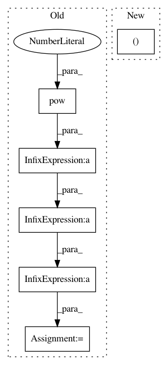

54f30e39c7aee65218cb40e219fe9f4f816f0eee,slm_lab/agent/algorithm/sac.py,SoftActorCritic,calc_policy_loss,#SoftActorCritic#Any#Any#,141
Before Change
reparam_mus = action_pd.rsample() // reparametrization for paper eq. 11
reparam_actions = torch.tanh(reparam_mus)
// paper Appendix C. Enforcing Action Bounds for continuous actions
log_probs = action_pd.log_prob(reparam_mus) - torch.log(1 - reparam_actions.pow(2) + 1e-6).sum(1)
q1_preds = self.calc_q(states, reparam_actions, self.q1_net)
q2_preds = self.calc_q(states, reparam_actions, self.q2_net)
q_preds = torch.min(q1_preds, q2_preds)
After Change
def calc_policy_loss(self, batch, action_pd):
"""policy_loss = alpha * log pi(f(a)|s) - Q1(s, f(a)), where f(a) = reparametrized action"""
log_probs, reparam_actions = self.sample_log_probs(action_pd, reparam=True)
states = batch["states"]
q1_preds = self.calc_q(states, reparam_actions, self.q1_net)
q2_preds = self.calc_q(states, reparam_actions, self.q2_net)
In pattern: SUPERPATTERN
Frequency: 3
Non-data size: 6
Instances
Project Name: kengz/SLM-Lab
Commit Name: 54f30e39c7aee65218cb40e219fe9f4f816f0eee
Time: 2019-08-04
Author: kengzwl@gmail.com
File Name: slm_lab/agent/algorithm/sac.py
Class Name: SoftActorCritic
Method Name: calc_policy_loss
Project Name: dpressel/mead-baseline
Commit Name: 78a7f7de24c34235d0784a5781f46de34d2336eb
Time: 2019-10-29
Author: dpressel@gmail.com
File Name: python/eight_mile/pytorch/layers.py
Class Name: LayerNorm
Method Name: forward
Project Name: biolab/orange3
Commit Name: 40f2c96e139a038b93146fbd1f65fdea3ee39015
Time: 2013-02-13
Author: janez.demsar@fri.uni-lj.si
File Name: Orange/widgets/utils/plot/owaxis.py
Class Name: OWAxis
Method Name: update_ticks